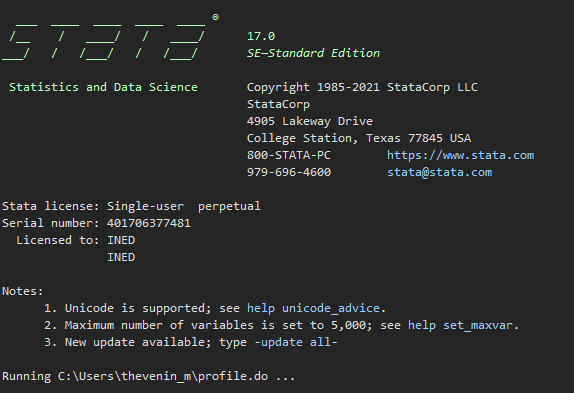
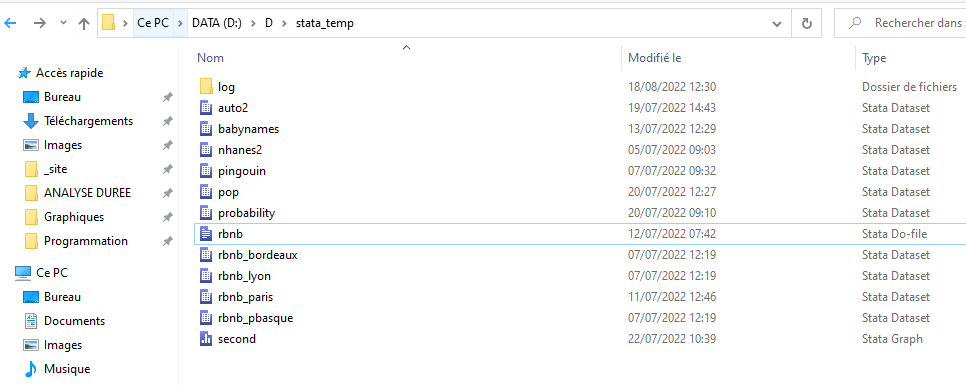
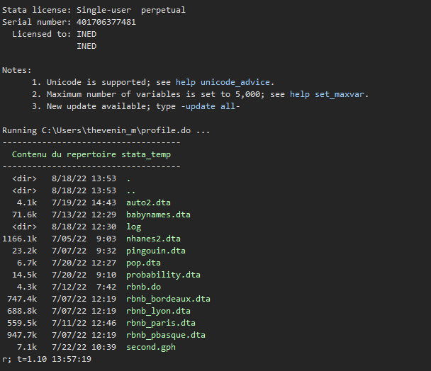
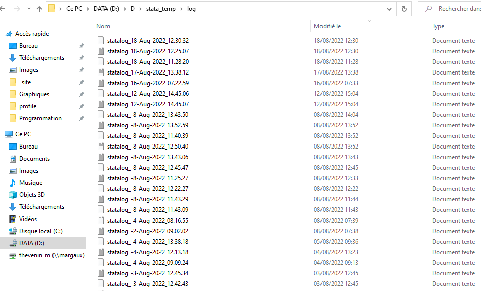

global user "C:/Users/nom_user/"Principe
- Un fichier profile.do est un programme qui s’éxécute à l’ouverture d’une session Stata. Ce programme comporte uniquement des éléments de configuration, par exemples:
- Création d’un log de session automatique. J’y tiens, un problème n’arrive pas toujours qu’aux autre.
- Affectation d’un répertoire temporaire autre que celui par défaut
- Modification de la localisation du répertoire ado plus (il est conseillé mettre sur le lecteur D à l’Ined ou tout autre lecteur que le C:)
- Toutes les commandes de paramétrisation préfixées par
set: contrôle du défilement de l’output, affichage du nombre de décimales dans les tableaux de régression etc… - Paramètres des graphiques: thèmes, police d’affichage… Je conseille d’utiliser à minima
grstylede Ben Jann.
- Toutes les commandes sont donc insérées dans un seule programme, il est possible de les activer, de les désactiver ou de les modifier très facilement selon l’usage du moment.
Création et modification d’un fichier profile.do
Le fichier profile.do doit être impérativement enregistré dans le répertoire user:
- Windows:
"C:/Users/nom_user/"- Linux (serveur Margaux):
"home/Users/nom_user/"
Une fois le programme enregistré, son effet n’est pris en compte que pour les sessions ouvertes ultérieurement et non sur celles en cours. Le programme est chargé uniquement à l’ouverture d’une session, un message apparait dans l’output:

Pour faciliter l’ouverture et l’enregistrement du fichier sous windows sans avoir à se promener dans l’explorateur de fichiers, on peut enregistrer la localisation du répertoire user avec une macro de type global, ici appelée user, et l’ouvrir rapidement avec l’invite de commande windows sous Stata (! ou shell).
Affectation du répertoire user dans une macro:
Ouverture du fichier profile.do avec l’invite de commande:
! $user/profile.doExemples
Les quelques exemples de configurations qui suivent sont forcément orientés vers mon propre usage.
Changement de la localisation du répertoire où sont enregistrées les commandes externes. Il est préférable de les localiser dans un lecteur autre que le lecteur C:
sysdir set PLUS "D:/D/ado/plus"
sysdir set PERSONAL "D:/D/ado/personal"On peut créer un répertoire qui fera office de répertoire d’enregistrement par défaut des fichiers, et affecter les opérations d’ouvertures et de sauvegardes dans ce répertoire.
* Après création du répertoire stata_temp
cd "D:\D\stata_temp\"C’est très optionnel: on peut demander à Stata d’afficher à l’ouverture le contenu de ce répertoire
noisily display as txt "------------------------------------"
noisily display as result " Contenu du repertoire stata_temp "
noisily display as txt "------------------------------------"
noisily dir "D:/D/stata_temp/"

Si on change dans un programme le répertoire d’affectation par défaut avec cd, ce répertoire stata_temp ne sera plus reconnu comme répertoire par défaut.
Pour palier ce problème on peut affecter une macro à la localisation de ce répertoire.
global tmp "D:/D/stata_temp/"cd "path/mon_projet"
use base, clear
keep if x==1
save $tmp/base_x1, replaceCette solution comporte néanmoins des limites lorsque le programme est utilisé par plusieurs personnes.
La plus utile de toutes les configurations décrites ici.
Au préalable, je conseille de créer un répertoire d’enregistrement pour ces fichiers logs. Je les enregistre dans un sous répertoire de stat_temp appelé tout simplement log.
capture log close statalog
local cdt = "`c(current_date)'"
local cdt: subinstr local cdt " " "-", all
local cti = "`c(current_time)'"
local cti: subinstr local cti ":" ".", all
local statalogname "statalog_`cdt'_`cti'.log"
log using "$user/stata_temp/log/`statalogname'" , text name(statalog)Pour le chemin d’accès, j’utilise le répertoire user enregistré sous forme d’une macro (voir plus haut).
Dans ce répertoire sont enregistrés tous les log de session depuis le 1er février 2022.

- Il n’est pas nécessaire d’ajouter l’option
permanentlycomme le fichier profile est chargé à chaque ouverture de session.- Ensemble des commandes préfixées par
set:help set
Exemple 1: nombre de décimales reportées dans l’output d’une régression avec set cformats (coef, se et bornes ci), set sformats (statistique du test) et set pformats (p-value).
Si on souhaite fixer le nombre de décimale pour l’ensemble des statistiques à 2
set cformats %9.2f // max longueur =9
set sformats %9.2f // max longueur =8
set pformats %9.2f // max longueur =5Exemple 2: déblocage du défilement de l’output
set more offDe nouveau avec une commande de type set on peut dans son fichier profile.do changer le thème par défaut avec set scheme nom_scheme.
J’ai maintenant pour (bonne) habitude d’utiliser grstyle de Ben Jann (présentation dans la formation dédiée aux graphiques: https://mthevenin.github.io/stata_graphiques/formation32.html#grstyle-de-b.jann).
Selon l’humeur du moment, on peut générer un thème graphique visuellement bien plus qualitatif que les thèmes usines de Stata, avec seulement quelques arguments.
grstyle init
grstyle set imesh
grstyle set legend 11, nobox
grstyle set color tableauPenser à installer les packafes grstyle** et colorpalette avant.
Chargement de l’installation python
De nouveau on retrouve une commande de type set qui permet d’indiquer la localisation de l’exécutable python. J’ai par exemple deux installations de Python, une standard et une avec conda:
python search
/*
C:\Users\thevenin_m\AppData\Local\Programs\Python\Python310\python.exe
C:\Users\thevenin_m\Miniconda3\python.exe
*/On déclare l’exécutable python à Stata avec la commande set python_exec. Si on souhaite le modifier, la présence de la commande dans le fichier profile.do s’avère plutôt utile.
C:/Users/thevenin_m/AppData/Local/Programs/Python/Python310/python.exeEmpêcher le bug graphique qui fait planter Stata avec Anaconda/miniconda
L’utilisation de conda - Anaconda ou miniconda - n’est pas recommandé pour exécuter du code python dans un programme Stata. Pour preuve, sans les quelques lignes de codes qui suiven, l’exécution d’un graphique utilisant matplotlib risque de faire crasher la session Stata. C’est très désagréable. Plutôt que d’insérer ce code dans le programme, il est préférable de le mettre une bonne fois pour toute dans le profile.do si python est utilisé via conda. Mieux vaut vérifier la localisation exacte du répertoire plugins, je ne sais pas si le chemin qui suit vaut pour toutes les installation de miniconda/anaconda.
python:
import os
os.environ['QT_QPA_PLATFORM_PLUGIN_PATH']="C:\\Users\\thevenin_m\\Miniconda3\\Library\\plugins\\plugins"
end
Note
La section qui suit met a disposition mon fichier profile.do. Tout est mis en ligne de commentaire, il suffit de retirer la balise * et de modifier les chemins si nécessaire.